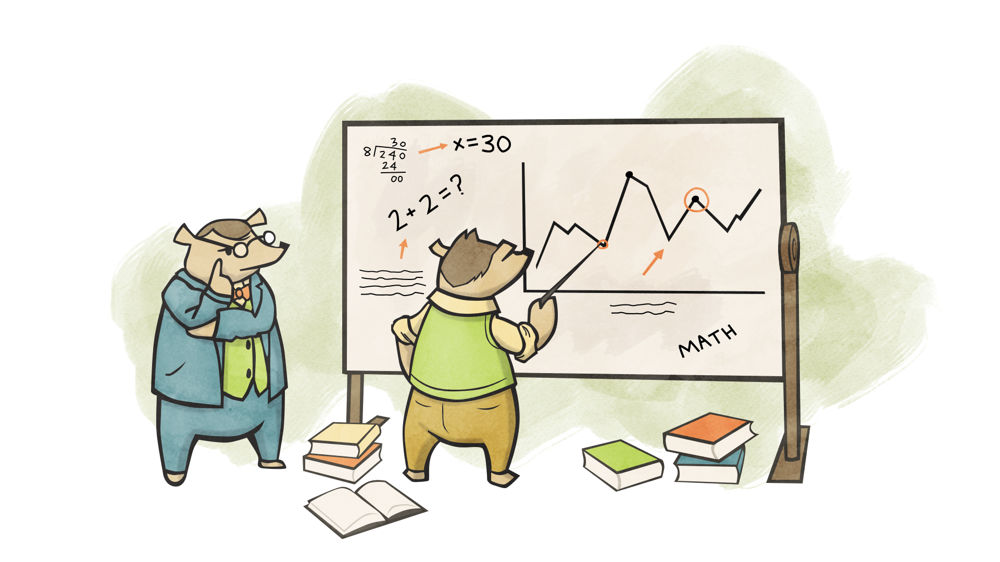
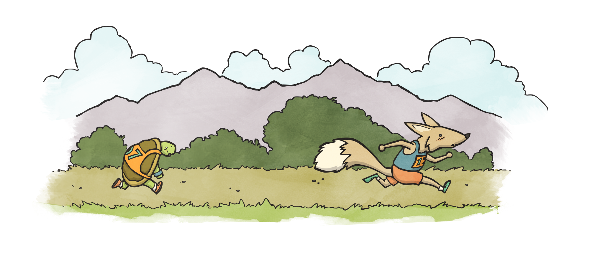

"Big O", or "Big O Notation", is a term used to describe a wider field of study. It is notation and related math that allows us to denote how big and how slow our programs are. Whether it be a video game, launching a rocket, a phone app or this web page, we want our apps to run fast and use as little memory as possible. Therefore, Big O is a notation that states the worst case scenario, or a "high water mark".
There are other notations (omega and theta), and they're interesting and I highly encourage you to read about them but for our purposes, and the practical purposes of writing code, we will solely focus on O (Big O).
Below are some examples of Big O Notation (also called the Bachmann-Landau notation).
O(1), pronounced "Oh of one", means our program executes immediately, or in constant time, the same time in which our program was run. Regardless of the size of our data. Examples of this are conditionals and assigments.
var x = 5
if (x == 5) {
console.log('x is five!')
}
Our program does not have to loop. We assigned x, and we put it through a conditional.
n is the number of items in our input. If we don't know exactly the number of items in our input to our program, as in algebra, we use n by convention to denote it.
Our program will grow to the size of our input. This is called linear growth, where the number of operations our program has is in direct correlation to the input. In the below program, we would have to hypothetically go through every item in the collection to determine whether or not it is 5, in the worst case scenario. Hence, O(n).
array = [ ? ] // an Array of unknown length
for (var i = 0; i < array.length; i++) {
if (array[i] == 5) {
return i
}
}
While O(n) grows to the same size as our input, O(n2) grows to the square of our input. Meaning, if our input is a list of 4 items, we may have up to 16 operations. This usually comes about from the nesting of loops. The below code shows an example of this:
array = [ ? ] // an Array of unknown length
for (var i = 0; i < array.length; i++) {
for (var j = 0; j < array.length; j++) {
console.log('i is: ' + i)
console.log('j is: ' + j)
}
}
Another, perhaps more common example, that can occur during something like an API request or getting two distinct pices of data and then having to merge or alter them in some way.
array1 = [ ? ] // an Array of unknown length
array2 = [ ? ] // a separate Array of unknown length
for (var i = 0; i < array1.length; i++) {
for (var j = 0; j < array1.length; j++) {
console.log(array1[i] + array2[j])
}
}
If we have a triple nested loop, using this above example, as you may have guessed we could say O(n3).
While we can say that this should be O(n * m) as they are distinct Arrays. Which does seem more algebraic at first glance, by convention we say this is still O(n2).
The reason for this is, n is entirely unknown. m is also entirely unknown. They could be the same length, different, or having nothing them. Therefore m is theorettically the same as n in regards to a conceptual point of view on how our program speed will grow. Arguably, it makes it perhaps slightly easier to represent what is going on. For instance, what if we have 3 lists noted above? O(n m o) doesn't roll off the tongue as well as "Oh of n cubed".
O(log n) denotes that our program will grow with the log2 of n. There are quite a few divide-and-conquer algorithms that filter our inputs log2 times.
Logarithms can be thought of as "reverse exponents". For instance, 2^3 is 8. Therefloore log28 is 3.
A great example of this is the binary-search algorithm.
There are O(n!) and O(2n) notations as well. They are interesting but less common.
When evaluating an entire program, we remove the constants.
a = [ ? ] // an Array of unknown length
for (var i = 0; i < array.length; i++) {
console.log(i)
}
for (var i = 0; i < array.length; i++) {
console.log(array[i])
}
We could say the above program would be O(2n). We have 2 loops, not nested, that iterate over our entire list. For Big O, we care about the trend or rather "how" our program grows. n, versus 2n, versus 100n, they all grow in linear time.
We drop the constant, the 2, and say our program's Big O is O(n).
Consider the below program:
array = [ ? ] // an Array of unknown length
for (var i = 0; i < array.length; i++) {
if (array[i] == 5) {
console.log('Found 5')
}
}
for (var i = 0; i < array.length; i++) {
for (var j = 0; j < array.length; j++) {
if (j == i) {
console.log('Found an interesting match!')
}
}
}
for (var i = 0; i < array.length; i++) {
for (var j = 0; j < array.length; j++) {
if (j == i) {
console.log('Found an interesting match again!')
}
}
}
There's a lot going on in this program.
array assignment runs in O(1)Mathematically, our program could look like:
O(1) + O(n) + O(n^2) + O(n^2)
We can then combine like terms:
O(1) + O(n) + 2O(n^2)
Drop our constants (remember, O(1) is considered "constant time"):
O(n) + O(n^2)
And finally, for this example, we use the largest Big O found to represent our whole program.
O(n^2)
We do this because, what if our program had nothing but super fast O(1) code but then we have our O(n2) loop? Our program has to run it and therefore, it becomes our "choke point". The slowest element that dictates the growth trend.

Big O Notation is important for any field of software development. With that said, it is also a very deep and involved field that requires a lot of time to understand. Below, I've posted some links that I suggest reading or at least glancing at. The important "tweet sized" takeaway from this section is:
Nested loops are something to stray away from whenever possible. We determine the Big O of our program by the slowest block found, regardless of how fast everything else is. Big O is an indication of growth, not an exact amount.
We have a jar of 100 marbles. 50 red. 50 blue. They are mixed up randomly in the jar, and we cannot see into the jar. We pull a marble at random.
We created a sorting algorithm for a list that works as follows:
Start at the beginning of the list
Traverse the list
Compare the current item, and the next, if there is one
If the current item is greater than the next, swap them
Do this "n" number of times
An example is, the list [ 5, 3, 7, 2, 1 ] would look like [ 5, 3, 2, 1, 7 ] after the first traversal.
Write code to reverse a String in O(n) time? (Meaning we go through the String only once). Your code should accept a String, such as "John", and return a String "nhoJ".
For a more advanced challenge, do not create a new String. Return the same String.
Merge sort runs in O(n * log n). Implement this sort in JavaScript, or another language of your choice. In addition, understand why, for this algorithm, we multiplied the run times instead of adding them together to determine the overall Big O.
And finally, see you if you can determine the Big O of the Stable Marriage Problem, before you Google the answer.